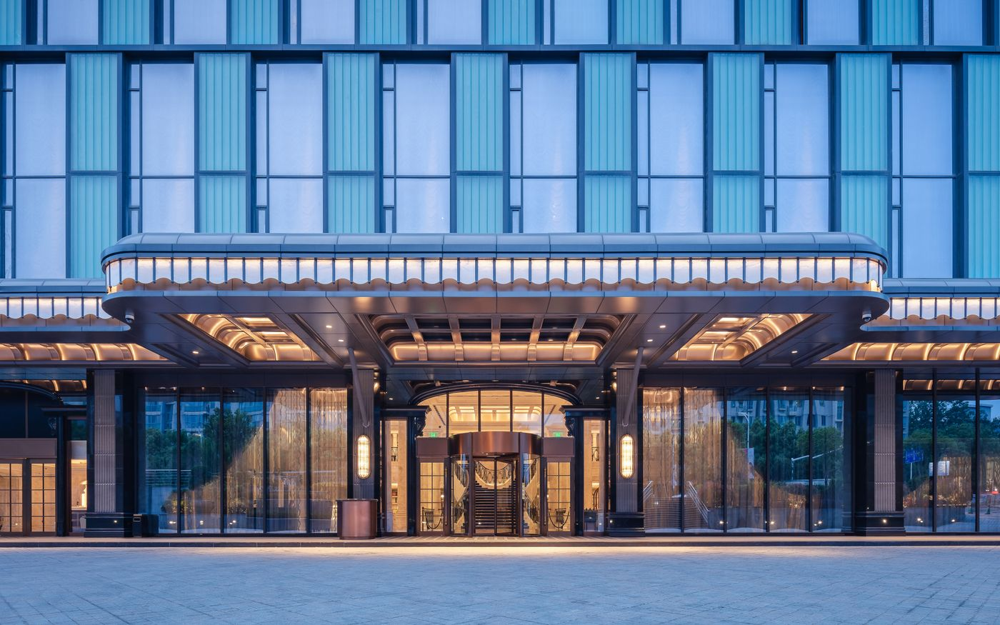
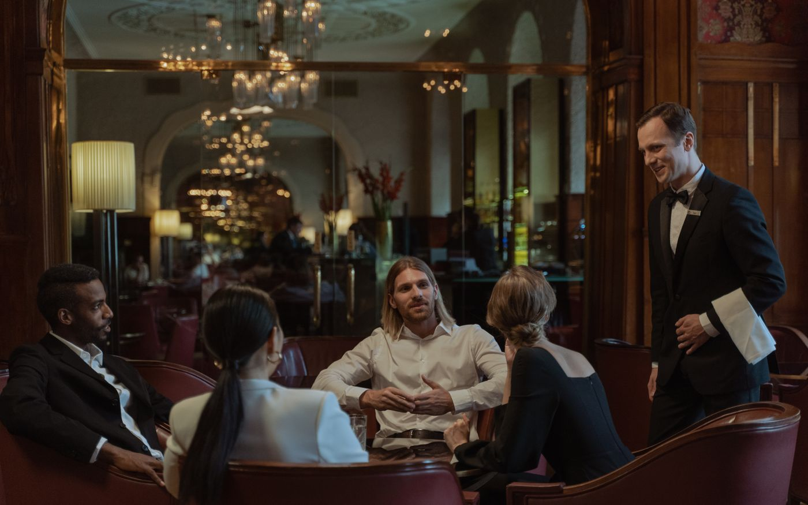
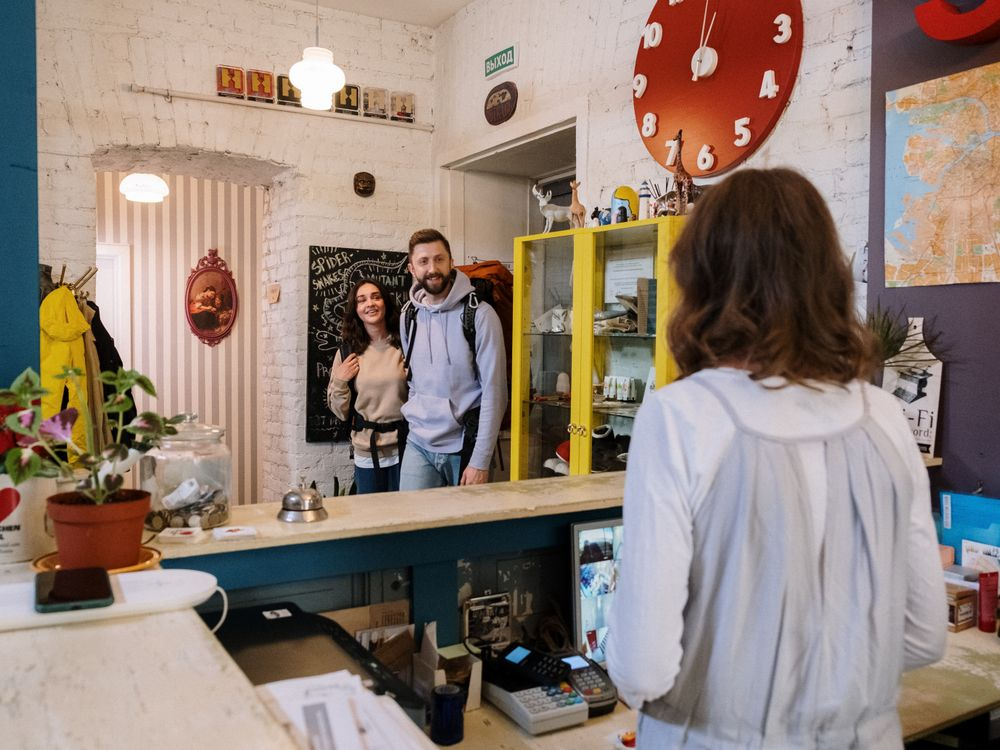
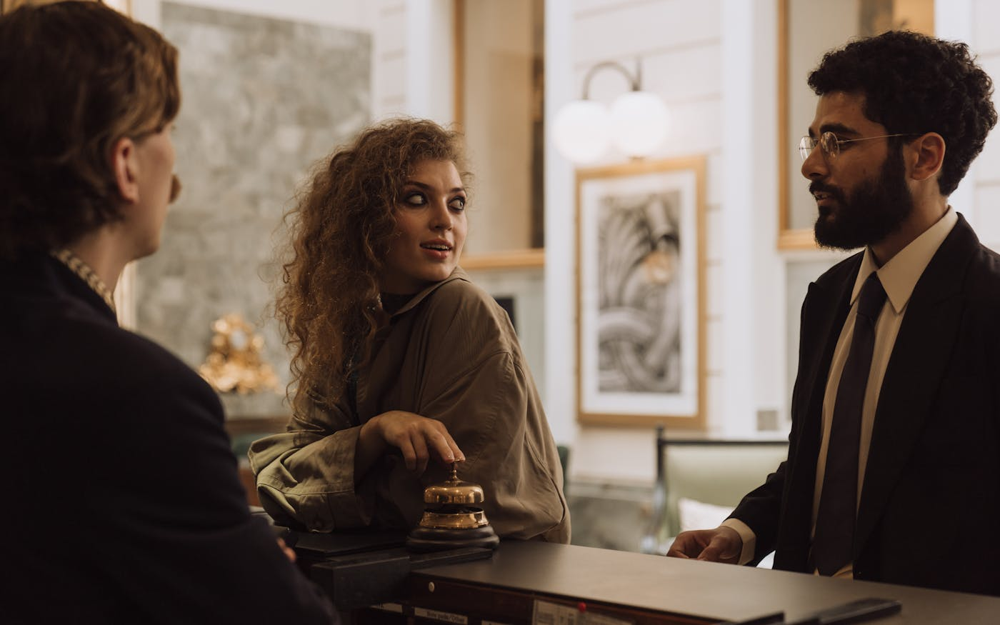

A

this person looks after passengers during a flight

Welcome to A Complete Guide to Tourism English. This course book has been written for students preparing for careers in tourism, hospitality and travel services, and for anyone who wishes to use English confidently in a professional travel setting. Designed as an English for Specific Purposes (ESP) programme, it takes learners on a carefully planned journey from an intermediate (B1) level to an upper-intermediate (B2) command of the language, building skills step by step through realistic, workplace-centred practice.
We believe that language proficiency in tourism is far more than a means of communication — it is a mark of professional excellence. A receptionist who masters the precise vocabulary of hotel operations, a guide who narrates a city walk with clarity and warmth, a staff member who handles guest requests gracefully, manages telephone reservations accurately, or communicates calmly in an emergency: each of these professionals turns language into service. Throughout this book, every word, phrase and dialogue has been chosen with that standard in mind.
The book contains fourteen units that progress steadily from B1 towards B2, and each one is built around a pillar of tourism work. The journey begins by introducing the industry itself, then moves through hotels and their facilities, reservations, check-in and check-out procedures, and food and beverage service. Later units develop the skills of giving directions, dealing with complaints, speaking professionally on the telephone, guiding tours, describing attractions, and observing cultural etiquette, before closing with promoting services, business tourism, and health and safety. Every unit combines vocabulary, grammar, listening, reading, speaking and writing, so that knowledge gained in one chapter is recycled and strengthened in the next.
Finally, we wish to thank the teachers and students whose questions, ideas and classroom experience shaped these pages. May this book accompany you to front desks, airport counters, restaurants and historic sites around the world. We hope this journey through Tourism English will be both insightful and inspiring.

Present Simple for describing jobs and routines
Tourism sectors and jobs · Types of tourism


| Jobs in tourism | Types of tourism | Places & things |
|---|---|---|
| tour guide | ||
When do we use it? We use the Present Simple to talk about jobs, daily routines and facts — things that happen again and again or are always true. We also use it for timetables.
| Affirmative | Negative | Question | |
|---|---|---|---|
| I / you / we / they | work | don't work | Do you work…? |
| he / she / it | works | doesn't work | Does she work…? |
Spelling note: with he / she / it we add -s (works), -es after -ch / -sh / -o (watches, finishes, goes), and -ies after a consonant + y (carries, flies).
Every year, more than a billion people pack their bags and leave home. Some want sunshine and a quiet beach. Some look for adventure. Others travel for work, for study, or to visit family. Welcome to tourism — one of the biggest industries in the world.
What exactly is the tourism industry? It is not one big company. It is thousands of businesses that work together. Airlines carry passengers across the sky. Hotels and guesthouses give them accommodation. Restaurants feed them, and travel agencies plan their trips and take bookings. Even the man who sells ice cream near a famous monument is part of the industry.
Tourism creates millions of jobs. A travel agent helps customers choose and book their holidays. A flight attendant looks after passengers in the air. A receptionist welcomes guests at the front desk, and a tour guide shows visitors the famous sights. Behind them all, hotel managers and tour operators plan, organise and solve problems every single day.
Tourism also has many faces. Business travellers fly to meetings and conferences. Cultural tourists visit museums, old cities and colourful festivals. Adventure tourists climb mountains, ride camels and sleep in yurts. And ecotourism grows fast: these travellers want to enjoy nature and protect it at the same time.
Uzbekistan is a good example. Every year, more visitors discover Samarkand, Bukhara and Khiva. They walk along the Silk Road, taste fresh bread from the bazaar and watch masters make ceramics. Tourism brings money to local families and gives young people interesting careers.
Why does all this matter to you? Because tourism connects people. When the world travels, cultures meet, friendships start and ideas move from country to country. So next time you see a group of tourists with cameras and maps, remember: a whole team of professionals stands behind their holiday — and one day, one of them could be you.
You write for the magazine Silk Road Student. Interview a tourism professional. Ask: What do you do? Where do you work? What time does your day start? What do you do every day? What do you like about your job? Take short notes.
Choose one situation card below. Answer the reporter's questions in full sentences. Use the Present Simple to describe your routines.
Your first tour starts at 8:30. You walk around the old town with your group, speak three languages and love telling stories about history.
You fly between Tashkent and Istanbul. You serve meals, help passengers and sometimes work at night. You visit a new city almost every week.
You welcome guests, answer the phone and take bookings. You work in shifts, and weekends are very busy.
You plan eco-tours to the Aral Sea region. You book hotels, meet customers in your office and answer many emails. Your office closes at 18:00.
Example: “I wear a uniform. I serve drinks and meals. I fly to a new city every week.” — “You are a flight attendant!”
My info card: title — three sentences in the Present Simple — one famous destination — a picture.

Adjectives for describing places, there is / there are, have / has got, comparatives and superlatives
Hotel & room types · Facilities & amenities · Adjectives for describing places


| Hotel & room types | Facilities & services | Describing adjectives |
|---|---|---|
| resort | room service | modern |
The Caravan Court is a small, (1) guesthouse in the old town of Khiva — a bed costs only thirty dollars a night. There are ten rooms: six (2) rooms with one large bed each, and four twins. Every room is (3) , so guests don't share a bathroom. The (4) desk is open twenty-four hours, and the staff are very friendly. The guesthouse hasn't got many modern (5) such as a gym or a pool, but the amenities it offers are excellent: fast Wi-Fi, air conditioning and a laundry service. In the evening, guests love drinking green tea in the (6) inner (7) next to the lobby.
When do we use them? Adjectives tell us what a place is like. They go before a noun (a spacious suite) or after be / look / seem (The lobby is luxurious). Adjectives never change for plural: two cosy rooms, not cosies.
| Adjective | Opposite | Adjective | Opposite |
|---|---|---|---|
| quiet | noisy | modern | old-fashioned |
| spacious | cramped | luxurious | basic |
When do we use it? To say that something exists in a place — perfect for describing hotel facilities. Use there is with singular nouns and there are with plurals.
| Affirmative | Negative | Question | |
|---|---|---|---|
| Singular | There is (There's) a gym. | There isn't a lift. | Is there a spa? |
| Plural | There are 40 rooms. | There aren't any suites. | Are there any twins? |
When do we use it? To talk about possession and features — what a hotel, a room or a person owns or includes. In British English, have got / has got means the same as have / has.
| Affirmative | Negative | Question | |
|---|---|---|---|
| I / you / we / they | have got ('ve got) | haven't got | Have you got…? |
| he / she / it | has got ('s got) | hasn't got | Has it got…? |
When do we use them? Use the comparative + than to compare two places. Use the + superlative to say one place is number one in a group. Short adjectives take -er / -est; adjectives ending in -y change to -ier / -iest; long adjectives use more / the most.
| Adjective | Comparative | Superlative |
|---|---|---|
| cheap | cheaper | the cheapest |
| cosy | cosier | the cosiest |
| modern | more modern | the most modern |
| good / bad | better / worse | the best / the worst |


Interviewer: Nilufar, thank you for meeting us. Can you describe your hotel for our readers?
Nilufar: With pleasure! The Ayvan Courtyard Hotel is a small boutique hotel in the old town of Bukhara. It's a traditional merchant's house, over 150 years old. We have got eighteen rooms: twelve doubles, four twins and two family suites. Every room is en-suite and has got air conditioning — that's essential here in summer!
Interviewer: What facilities are there for guests?
Nilufar: There is a shady courtyard with a 200-year-old mulberry tree, and there's a small library next to the lobby. There isn't a swimming pool — the building is too old for that — but there is a hammam-style spa in the cellar. We also offer room service and free Wi-Fi, and our concierge, Mr Karimov, knows every street in Bukhara.
Interviewer: How is your hotel different from the big chain hotels outside the old town?
Nilufar: The chain hotels are bigger and more modern, of course. They have got conference halls and fitness centres, and in winter they are often cheaper than us. But our hotel is cosier and much more personal. Guests say that breakfast under our mulberry tree is the most beautiful start to a day. And we are closer to the main sights — the Ark fortress is a five-minute walk away.
Interviewer: Who are your typical guests?
Nilufar: Mostly couples from Europe and East Asia, and many young travellers too. Last month we welcomed guests from fourteen different countries!
Interviewer: Finally, what is the most important quality in a good hotel?
Nilufar: People, not buildings. A spacious lobby is nice, but a warm welcome is nicer. The best hotels make every guest feel like family.
You are looking for accommodation. Read your situation, ask about rooms, facilities and prices. Compare the options and make a decision.
You work at the Silk Road Plaza Hotel. Describe your rooms and facilities with there is / there are and has got, answer questions and recommend the best option.
A family of four from Seoul needs two connecting rooms with breakfast. Their budget is $100 a night in total.
A backpacker from Brazil wants the cheapest bed in town and asks what facilities the hostel floor has got.
A honeymoon couple from Cairo wants the most romantic suite in the hotel, with a view and room service.
A business traveller from Berlin needs the quietest room available, with fast Wi-Fi and a desk, near the conference hall.
Example: “This place is cheaper than a hotel. There are bunk beds in big shared rooms, and it has got a shared kitchen…” — “A hostel!”

Hotel name:
Slogan:
Facilities:
Rooms & prices:
Why us?

Future forms: will, going to, Present Continuous for arrangements
Booking terms; dates, rates and payment words


When you book a room online, first choose your (1) and the number of nights. The website then shows the nightly (2) , which is usually cheaper in the (3) . Most hotels (4) your credit card a small deposit, and they send an email to (5) your reservation. Read the cancellation policy carefully before you pay: if you (6) early, many hotels return your money, but a last-minute change often means you will not get a (7) at all.
| Verb | Noun |
|---|---|
| 1. make | a) availability |
| 2. pay | b) a credit card |
| 3. check | c) a full refund |
| 4. confirm | d) a reservation |
| 5. charge | e) a rate |
| 6. quote | f) a deposit |
| 7. issue | g) an invoice |
| 8. give | h) a booking |
Now use three of the collocations in your own sentences about a hotel in your city.
We use will ('ll) when we decide something at the moment of speaking, when we offer or promise to do something, and for predictions about the future (often with I think / probably).
| Affirmative | Negative | Question | |
|---|---|---|---|
| all persons | will ('ll) book | will not (won't) book | Will you book…? |
We use be going to for plans and intentions we decided before the moment of speaking.
| Affirmative | Negative | Question | |
|---|---|---|---|
| I | am going to book | am not going to book | Am I going to book…? |
| he / she / it | is going to book | isn't going to book | Is she going to book…? |
| you / we / they | are going to book | aren't going to book | Are they going to book…? |
We use the Present Continuous for fixed future arrangements with other people — bookings, meetings and timetables in a diary. There is usually a date or a time in the sentence.
| Affirmative | Negative | Question | |
|---|---|---|---|
| I | am arriving | am not arriving | Am I arriving…? |
| he / she / it | is arriving | isn't arriving | Is he arriving…? |
| you / we / they | are arriving | aren't arriving | Are they arriving…? |


[10:02] Sofia: Hello! I'm interested in the two-day Aydarkul yurt camp tour. Do you have availability for the last weekend of June?
[10:03] Bekzod (agent): Good morning, Sofia, and welcome to Nomad Trails! Yes, we still have four places for 27–28 June. How many travellers?
[10:04] Sofia: Two — my brother and me. We're going to spend ten days in Uzbekistan, and we want at least one night in the desert.
[10:05] Bekzod: Great choice! The tour costs 95 US dollars per person. The rate includes transport from Samarkand, dinner, breakfast and a camel ride at sunset.
[10:06] Sofia: Perfect. We're staying in Samarkand that week, at a guesthouse near Registan Square. Where does the tour start?
[10:07] Bekzod: Our driver is picking up all guests from their hotels between 7:30 and 8:00 on Saturday morning. Just send me the address of your guesthouse.
[10:08] Sofia: Will we sleep in a real yurt?
[10:08] Bekzod: Yes! Each yurt sleeps four to six people. Nights are cool in the desert, so I'll add two extra blankets to your booking — no charge.
[10:09] Sofia: Thank you! And how do we pay?
[10:10] Bekzod: We ask for a 30 per cent deposit by card today; you're going to pay the balance in cash when you arrive at the camp. I'll email the invoice and our cancellation policy in a few minutes. If you cancel more than 72 hours before the tour, you will receive a full refund.
[10:11] Sofia: That sounds fair. One last question — my brother is arriving from Rome on 25 June. If his flight is late, can we change the dates?
[10:12] Bekzod: Of course. We won't charge you for one date change. Shall I confirm the booking now?
[10:13] Sofia: Yes, please! You've been very helpful.
[10:14] Bekzod: Done! Your booking reference is NT-4172, and the confirmation is on its way to your inbox. Have a wonderful trip!
You want to book a three-night stay in Bukhara for two people in September. Decide your dates before you start. Ask about the rate, the deposit and the cancellation policy.
You work at the Caravan Stop Hotel. Check availability, quote the nightly rate, ask for a 25% deposit and explain the cancellation policy. Offer to send a confirmation email.
A customer calls to change the dates of booking HK-2210. The new dates are in the peak season, so the rate is higher. Agree on a solution.
A student wants to cancel a hostel booking for next weekend and asks if she will get a refund. The agent checks the cancellation policy and explains it politely.
A family of five is going to attend a wedding in Fergana next month. They need two rooms and an early check-in. The agent checks what is possible.
A business traveller is arriving on the last flight at 23:50. He wants to be sure the hotel will hold his reservation. The agent reassures him and confirms the details.
Dear Ms Petrova,
Kind regards,
Include:
Your card must show: the guesthouse name · nightly rates for the peak and low season · the deposit you charge · your cancellation policy · the payment methods you accept · when the guest will receive the confirmation and booking reference. Add a small picture or logo if you like. Be ready to present your card in the next lesson.

Polite requests and offers, Present Perfect for recent actions (just, already, yet)
Check-in and check-out terms, documents and payment


When Lucía Fernández arrived at the Grand Oasis Hotel in Khiva, she went straight to the (1) . The receptionist smiled and asked her to fill in a (2) and show her passport. Lucía also paid a small (3) of twenty dollars, which the hotel will return when she leaves. Then the receptionist handed her the (4) for room 215. A friendly (5) named Bekzod put her heavy (6) on a trolley and took it upstairs. Three days later, at (7) , Lucía settled the bill, took her receipt and asked the receptionist to call her a taxi.
Rule of use: at a hotel desk we soften requests with could / would and make offers with would you like / shall I — direct forms like “Give me your passport” sound rude.
| Phrase | Function |
|---|---|
| 1. “Could I see your passport, please?” | a) offering to carry the guest's bags |
| 2. “Shall I arrange a wake-up call?” | b) politely agreeing and giving something |
| 3. “Would you mind signing here?” | c) asking to see a travel document |
| 4. “Would you like help with your luggage?” | d) asking the guest to write their name |
| 5. “Could I have a late check-out, please?” | e) offering a refreshment on arrival |
| 6. “Can I offer you a welcome drink?” | f) offering a morning telephone call |
| 7. “Could you call me a taxi, please?” | g) asking for transport |
| 8. “Certainly, madam. Here you are.” | h) asking to leave the room later than usual |
When do we use it? We use the Present Perfect (have / has + past participle) for recent actions that are connected to now — very common at check-in and check-out. We often add just (a moment ago), already (sooner than expected) and yet (in negatives and questions).
| Affirmative | Negative | Question | |
|---|---|---|---|
| I / you / we / they | have (’ve) checked in | haven't checked in | Have you checked in…? |
| he / she / it | has (’s) checked in | hasn't checked in | Has she checked in…? |


My name is Zarina Yusupova, I am twenty-one, and I have just finished my first week as a trainee receptionist at the Caravan Court Hotel in Bukhara. Believe me, it has been the busiest week of my life!
On my first morning, my supervisor, Mr. Karimov, explained our check-in procedure step by step. First, we greet the guest and find the reservation. Then we politely ask for documents: “Could I see your passport, please?” After that, the guest fills in a registration form, signs at the bottom and pays a deposit. Finally, we hand over the key card and offer help: “Would you like help with your luggage?” It sounds simple, but when five tired tourists arrive at the same time, it is anything but simple.
In seven days I have already checked in more than sixty guests from twelve different countries. I have welcomed a honeymoon couple from Brazil, a tour group from South Korea and a famous photographer from Germany. I have also made a few small mistakes — on Wednesday I gave a guest the key card for the wrong room — but luckily I haven't made any serious ones yet. My colleague Rustam, our porter, has carried hundreds of suitcases this week and has never stopped smiling. He says, “A guest's first five minutes decide their whole stay.”
Check-out has its own surprises too. Yesterday morning a guest told me he had lost his key card; ten minutes later we found it in his coat pocket! Another guest asked for a late check-out because her flight to Istanbul was in the evening, and I was happy to arrange it.
Has this week changed my plans for the future? Absolutely. I have decided to make a career in hospitality. The hours are long and my feet hurt, but every time a guest says, “Thank you, you've been so helpful,” I remember why I chose this job.
You have just arrived at the Silk Star Hotel after a twelve-hour journey. You are tired and your suitcase is heavy. Check in, ask at least two polite questions and accept or refuse the receptionist's offers.
Welcome the guest, find the reservation and ask politely for documents, a signature and a deposit. Make at least two offers (luggage, wake-up call, welcome drink). Then swap roles.
The guest arrives at 9 a.m., but the room will not be ready until 2 p.m. Receptionist: apologize and offer to store the luggage and serve a free coffee in the lobby café.
At check-out, the invoice shows a mini-bar charge, but the guest hasn't taken anything from the mini-bar. Guest: stay polite but firm. Receptionist: check, apologize and correct the invoice.
The guest's flight to Istanbul leaves at 11 p.m. and she asks for a late check-out, but the hotel is fully booked. Receptionist: offer a solution — the luggage room and the spa showers.
A guest comes to the front desk: he has lost his key card somewhere in the old town. Receptionist: calm him down, ask for his ID and issue a new card.
Use at least five Present Perfect forms and five vocabulary items from this unit.


Countable and uncountable nouns, polite suggestions, First Conditional
Menu and food categories, service verbs, dietary terms
| Quality of a good waiter | My rank | Partner's rank |
|---|---|---|
| knows every dish on the menu very well | ||
| is polite and friendly with every guest | ||
| serves food quickly and carefully | ||
| remembers guests' dietary needs (allergies, halal, vegetarian) | ||
| can suggest dishes and drinks confidently in English |


| Menu & courses | Service actions | Dietary needs |
|---|---|---|
| starter, ________ , ________ , ________ | ________ , ________ , ________ , ________ | ________ , ________ , ________ , ________ |
At the Caravan Plaza Hotel, we often (1) large tour groups from all over the world. Before every dinner, the tour leader sends us a list of dietary needs. If a guest is (2) , our chef prepares dishes without meat or fish. Guests with a nut (3) must always tell the waiter first, because some sauces contain walnuts. We also offer (4) lamb for our Muslim guests and (5) bread for guests who cannot eat wheat. During the meal, the waiters bring hot and cold (6) to every table and refill the glasses quietly. And if guests cannot choose, we always (7) the chef's special of the day.
When do we use it? Countable nouns are things we can count one by one (a menu, two starters, three desserts). Uncountable nouns are things we cannot count as separate items (rice, water, bread, advice) — they have no plural form. We use many / a few with countable nouns, much / a little with uncountable nouns, and some / any with both. To count uncountable food, use a container or portion: a glass of water, a bowl of soup, a piece of cake.
| Countable (a starter → starters) | Uncountable (rice — no plural) | |
|---|---|---|
| Affirmative | There are some / many / a few starters. | There is some / a little rice. |
| Negative | There aren't many desserts left. | There isn't much sugar in it. |
| Question | How many courses are there? Are there any salads? | How much water do we need? Is there any bread? |
Rule of use: soften suggestions with question forms and modal verbs — direct orders like “Take the soup” sound rude to guests.
| Phrase | Function |
|---|---|
| 1. “Shall I refill your glass, madam?” | a) recommending a dish for fish lovers |
| 2. “Why don't you try the pumpkin soup?” | b) offering more drink |
| 3. “How about a gluten-free pasta instead?” | c) offering further help |
| 4. “Would you like to see the dessert menu?” | d) suggesting an alternative dish |
| 5. “May I suggest a table near the window?” | e) recommending a starter |
| 6. “Can I get you anything else?” | f) offering desserts |
| 7. “Perhaps you'd like to start with some salads from the buffet?” | g) suggesting the buffet |
| 8. “If you like fish, you could try the grilled trout.” | h) recommending a place to sit |
When do we use it? We use the First Conditional to talk about a real or likely situation in the future and its result. Form: If + Present Simple, … will + base verb. The if-clause can also come second — then we don't need a comma.
| Affirmative | Negative | Question | |
|---|---|---|---|
| if-clause (Present Simple) | If she orders fish, … | If she doesn't order now, … | … if the buffet opens early? |
| result clause (will) | … she will get rice with it. | … she won't get a table. | Will you try the plov …? |


A training blog for new service staff, by Farrukh Toshev, Head Waiter at the Caravan Court Hotel, Bukhara.
Every Friday evening, a new tour group arrives at our hotel restaurant: forty hungry guests from Japan, Germany, Brazil or Malaysia, all sitting at one long table. After twelve years as head waiter, I want to share the three rules that keep our service smooth — and our guests smiling.
Rule one: prepare before the group walks in. I always email the tour leader a day early and ask for a list of dietary needs. If a guest has a food allergy, we will inform the chef immediately. If somebody follows a halal or vegetarian diet, the kitchen will prepare a separate dish without extra charge. Last month we served a group with three gluten-free guests, and because we knew about it early, the whole dinner went perfectly.
Rule two: guide your guests politely. Never give orders — make suggestions. Instead of “Take the soup”, say “Why don't you try our pumpkin soup?” or “May I recommend the chef's plov?” International guests often feel nervous about unfamiliar food. If you smile and explain each dish, they will feel comfortable and order more. A short suggestion at the right moment sells more desserts than any menu photo.
Rule three: watch the table, not the clock. Good waiters refill water glasses before guests ask. They clear empty plates quietly, pour tea without spilling a drop, and bring each course at the right moment. Remember that some things in this job are easy to count — two starters, three desserts, ten beverages — but great service also needs uncountable things: patience, attention and a little luck with the kitchen!
My final advice is simple. If you treat every group like guests in your own home, they will remember your restaurant — and many of them will come back.
You work at the Golden Samosa, a busy hotel restaurant in Tashkent. Greet the guest, suggest dishes politely (“May I recommend…?”, “Why don't you try…?”), ask about dietary needs and offer beverages. Promise solutions with the First Conditional: “If the dish contains nuts, I will…”.
You are on a city tour and have a dietary need — choose one: vegetarian, nut allergy, halal or gluten-free. Ask the waiter for recommendations, then order a starter, a main course and a beverage. Ask at least one question about the ingredients.
A guest with a serious nut allergy wants to order the chef's special walnut cake. Warn them politely and suggest a safe dessert instead.
A vegetarian guest cannot find a meat-free main course on tonight's menu. Apologize and offer an alternative from the kitchen.
The buffet closes in fifteen minutes, and a hungry tour group of ten people has just arrived. Explain the options and suggest the fastest one.
A guest asks which beverage goes well with grilled fish. Recommend one, and offer to refill their glass later in the meal.


Imperatives for directions, prepositions of place, asking for and giving clarification
Places in town, direction phrases, prepositions of place


| Places in town | Direction phrases | Prepositions of place |
|---|---|---|
| monument | ||
Leaving the hotel? The Tourist Information Centre is very easy to find. Go (1) ahead along Amir Temur Street for about five minutes. (2) left at the crossroads and go (3) the old mosque — don't stop there, it opens later. Soon you will see a small fountain (4) to a bookshop. The centre is (5) the fountain, on the other side of the street. It sits (6) the bank and the post office, right on the (7) of Museum Street. The friendly staff there will give you a free map and a landmark guide.
When do we use it? We use the imperative (the base form of the verb, with no subject) to give directions, instructions and friendly advice. It sounds clear, not rude — especially with please or a smile!
| Affirmative | Negative | Polite form | |
|---|---|---|---|
| directions | Turn left. Go past the bank. | Don't turn right. Don't cross here. | Please take the next street. |
| advice | Carry a map. | Don't walk alone at night. | Do visit the old mosque! |
When do we use it? Prepositions of place tell a visitor the exact position of a building, usually after is/are or you'll see. They turn a street name into a picture the listener can follow.
| Preposition | Meaning | Tourism example |
|---|---|---|
| opposite | on the other side of the street | The bazaar is opposite the mosque. |
| next to | directly beside | The lift is next to reception. |
| between | in the middle of two places | It's between the park and the bridge. |
| behind / in front of | at the back / at the front | The garden is behind the museum. |
Rule of use: repeat the key words back to the speaker and confirm before you set off — it is polite and saves you a long walk in the wrong direction!
| Phrase | Function |
|---|---|
| 1. "Sorry, could you say that again?" | a) saying the same thing in a different way |
| 2. "Did you say the first turning on the right?" | b) confirming that the listener understood correctly |
| 3. "I mean the new bridge, not the old one." | c) asking the speaker to slow down |
| 4. "So, the museum is next to the fountain — is that right?" | d) asking someone to repeat |
| 5. "Could you speak more slowly, please?" | e) summarising what you heard to confirm it |
| 6. "Not quite — it's on the left, not the right." | f) gently correcting the listener |
| 7. "In other words, stay on Main Street the whole time." | g) checking one specific detail |
| 8. "Exactly. You've got it." | h) correcting or clarifying what you yourself said |

Welcome to the Old Town of Bukhara, a living museum on the great Silk Road. Follow this simple walking route and discover the city's most famous sights in one unforgettable day.
Morning (9:00–12:00). Begin at Liab-i Hauz, the peaceful main square built around an old pond. Have a cup of green tea under the mulberry trees, then stand with the pond behind you and take the narrow street on your right. Go straight ahead for about two hundred metres and you will see the Trading Domes, three covered bazaars where craftsmen sell carpets, ceramics and silk scarves. Don't be afraid to bargain politely — it is part of the fun!
Afternoon (12:00–16:00). From the last dome, turn left and walk past the small fountain. The Kalon Minaret, the tallest monument in the Old Town, is directly in front of you. The famous mosque stands next to the minaret, and the entrance is opposite the madrasah, an old Islamic school. Climb the minaret for a wonderful view, but wear comfortable shoes — there are 105 steps! For lunch, try plov at the family café on the corner of the square.
Evening (16:00–19:00). Go back towards the Trading Domes and take the second turning on the left. Walk between the old city walls and the park until you reach the Ark Fortress, the ancient home of Bukhara's rulers. Watch the sunset from the viewing platform behind the fortress — it is free after 17:00.
Visitor tips. Don't forget to carry drinking water and a hat in summer. The Tourist Information Centre is between the bank and the post office on Independence Street; ask the friendly staff for a free map. Most museums close at 17:00, so plan your visits carefully. Finally, please respect local customs: dress modestly and ask permission before you photograph people.
You have just arrived in the Old Town and you are standing outside the railway station. Choose a destination (use the map on page 51 or invent one) and ask a local person the way. Ask them to repeat or slow down at least once, and confirm the directions before you finish.
A tourist stops you in the street. Give clear directions using imperatives (go, turn, take, don't…) and prepositions of place (opposite, next to, between…). Check that the tourist has understood before they leave.
Marco from Italy wants to walk from the station to the central bazaar — but it closes at 18:00 and it is already 17:20. Give him the fastest route.
A guest at the Grand Silk Road Hotel asks the receptionist the way to the nearest pharmacy. The shortest street is closed for repairs, so explain a different route.
Amina from Morocco has heavy luggage. She needs the closest taxi rank and a cash machine on the way. Her English is good, but the street names are new to her — be ready to repeat.
A visitor's phone battery is dead and he has mixed up two similar street names. He is looking for the Silk Road Museum. Clarify politely what he means, then direct him there.
Example: "It's in the city centre, opposite a big fountain, between a bank and a café. There's a park behind it… What is it?"


Apologizing expressions, Past Simple review, could / would / might for polite solutions
Common travel problems; apology and solution phrases


Last month our front desk received a (1) from a guest about her lost (2) — the airport shuttle left her suitcase behind. Our duty manager was quick to (3) and sent a driver back to the airport immediately. Because of the (4) , the hotel offered the guest a free (5) to a suite and a dinner (6) for our rooftop restaurant. And when something in a room is broken, we always (7) it within twenty-four hours. Happy guests always come back!
Rule of use: apologize first, show you understand, then offer a solution — in that order.
| Phrase | Function |
|---|---|
| 1. Please accept our sincere apologies. | a) making a complaint |
| 2. That must have been very frustrating. | b) showing empathy |
| 3. I'll send a plumber up right away. | c) promising immediate action |
| 4. Could I offer you a free dessert? | d) apologizing |
| 5. I'm afraid the tap in my room is leaking. | e) asking for details |
| 6. Thank you, I really appreciate your help. | f) offering compensation |
| 7. Could you tell me exactly what happened? | g) thanking the staff |
| 8. We can't give a refund, but we can offer a voucher. | h) politely refusing and offering an alternative |
When do we use it? When a guest complains, they describe finished events in the past: what happened, when it happened, and what the staff did (or didn't do). That is the Past Simple.
| Affirmative | Negative | Question | |
|---|---|---|---|
| regular (complain) | The guest complained. | The guest didn't complain. | Did the guest complain? |
| irregular (lose) | The airline lost my bag. | The airline didn't lose my bag. | Did the airline lose my bag? |
When do we use them? Hotel and restaurant staff soften their offers and suggestions with modal verbs. They sound calmer and more professional than direct orders.
| Affirmative | Negative | Question | |
|---|---|---|---|
| could | We could change your room. | We couldn't find your booking. | Could I offer you a dessert? |
| would | I would prefer a quiet room. | He wouldn't accept the voucher. | Would you like an extra pillow? |
| might | You might prefer the terrace. | She might not enjoy the noise. | (questions with might are rare) |


★★☆☆☆ Review of the Caravan Court Hotel, Bukhara — posted by Elena R., Spain, three weeks ago
My husband and I stayed at the Caravan Court Hotel in Bukhara last month. We booked a quiet double room with a courtyard view, but when we arrived, the receptionist told us the hotel was overbooked. We waited forty minutes in the lobby while the staff looked for a solution. Finally, they gave us a smaller room next to the lift. The room was clean, but the air conditioning didn't work properly, and the tap in the bathroom leaked all night. The next morning we complained at the front desk. To be fair, the staff apologized immediately and moved us to a lovely room with a balcony. The breakfast was excellent, and the manager personally offered us a free dinner. The second half of our stay was perfect — but first impressions matter.
Response from the management — Farrukh Olimov, General Manager
Dear Elena, thank you for your honest review, and please accept our sincere apologies. You are right: we made mistakes on the day you arrived. An online system error caused the overbooking, and our maintenance team didn't check your room carefully before your arrival. We were truly sorry that your first night was uncomfortable. Since your visit, we fixed the leaking tap, repaired the air conditioning and trained our reception team to handle such situations faster. If you decide to return, we would be delighted to welcome you again. We could offer you a complimentary upgrade to our courtyard suite, and you might also enjoy our new evening plov masterclass — it would be our pleasure to reserve a place for you. We hope to see you in Bukhara soon.
Choose a situation. Explain politely but firmly what happened, using the Past Simple. Say what solution you expect.
Listen carefully, apologize, show empathy and offer at least two polite solutions. Make sure the guest leaves happy.
The neighbours in the next room played loud music all evening. The guest has a flight at 7 a.m. and wants to sleep NOW.
The guest ordered hot lagman soup twenty minutes ago. It finally arrived — cold. The waiter must save the evening.
Mrs Okafor flew from Lagos to Tashkent, but her luggage didn't arrive. She has a conference tomorrow morning and no business clothes.
A tired backpacker booked a bed two months ago, but the hostel is overbooked. The receptionist can offer a partner hotel and a free taxi.
Dear Ms Akhtar,
Kind regards,
__________________
Duty Manager
Step 1 — Listen: ____________________
Step 2 — Apologize: ____________________
Step 3 — Offer a solution: ____________________
Step 4 — Follow up: ____________________

Telephone phrases, spelling & clarifying information with code words, taking notes and messages
Telephone equipment & actions, the spelling alphabet, message-taking terms


| Verb | Ending |
|---|---|
| 1. hold | a) up the receiver |
| 2. put | b) the caller through |
| 3. leave | c) the line |
| 4. dial | d) up when the line is bad |
| 5. take | e) a voicemail for the manager |
| 6. hang | f) down the caller's details |
| 7. speak | g) up at the end of the call |
| 8. pick | h) the wrong number |
Zarina answers about a hundred calls a day at the Bukhara Plaza Hotel. When a caller asks for a manager, she says, “Hold the line, please,” and puts the caller (1) to the right (2) . If the line is (3) , she offers to take a (4) or politely asks the caller to (5) later. After office hours, callers can record their words on the hotel's (6) . When a message is (7) — for example, a guest's flight leaves the same evening — Zarina writes it on a message pad and takes it to the manager immediately.
On business calls we use polite, fixed phrases. They sound professional and are easy to understand, even on a bad line.
| Phrase | Function |
|---|---|
| 1. “Good morning, Sunrise Tours, Aziz speaking.” | a) asking the caller to wait |
| 2. “Could you put me through to the bookings desk?” | b) offering to write down a message |
| 3. “I'm afraid his line is engaged.” | c) answering a business call |
| 4. “Hold the line, please.” | d) checking information you are not sure about |
| 5. “Could you spell that for me, please?” | e) asking to be connected to somebody |
| 6. “Did you say Tuesday or Thursday?” | f) asking for spelling |
| 7. “Can I take a message?” | g) ending a call politely |
| 8. “Thank you for calling. Goodbye!” | h) saying that somebody is busy on another call |
Names and numbers cause most telephone mistakes. Spell them with international code words and always check what you hear.
| A — Alpha | B — Bravo | C — Charlie | D — Delta |
| E — Echo | F — Foxtrot | G — Golf | H — Hotel |
| I — India | J — Juliett | K — Kilo | L — Lima |
| M — Mike | N — November | O — Oscar | P — Papa |
| Q — Quebec | R — Romeo | S — Sierra | T — Tango |
| U — Uniform | V — Victor | W — Whiskey | X — X-ray |
| Y — Yankee | Z — Zulu |
When you take a message, note only the key words and numbers, then read everything back to the caller to check it.
| Caller (Customer) | Receiver (Receptionist) |
|---|---|
| Good afternoon, Grand Silk Road Hotel, reception. (1) ? | |
| Hello. Could I (2) to the tours desk, please? | |
| I'm afraid the line is (3) . Would you like to hold? | |
| No, thank you. Can I (4) a message instead? | |
| Of course. Could I have your (5) , please? | |
| It's Mrs Soto — S for Sierra, O for Oscar, T for Tango, O for Oscar. | |
| Thank you, Mrs Soto. I'll (6) your message on to our tours manager. | |
| Thanks a lot. Goodbye! | |
| Thank you for calling. Goodbye! |


Madina: Good morning, Karavan City Tours, Madina speaking. How can I help you?
Daniel: Good morning. I'd like to book two places on the Old City walking tour, please.
Madina: Certainly, sir. We run the tour every day at ten and at four. Which time would you prefer?
Daniel: The morning one, please, for this Saturday.
Madina: One moment, please… Yes, we still have places on Saturday at ten. Could I have your full name?
Daniel: It's Daniel Okafor.
Madina: Could you spell your surname for me, please?
Daniel: Of course. O for Oscar, K for Kilo, A for Alpha, F for Foxtrot, O for Oscar, R for Romeo.
Madina: Thank you, Mr Okafor. And a contact number, please?
Daniel: It's 90 318 4276.
Madina: Sorry, the line is a little bad. Did you say 318 or 380?
Daniel: 318. Three, one, eight.
Madina: Perfect. Let me read that back to you: two adults, Old City walking tour, Saturday at ten o'clock, phone 90 318 4276.
Daniel: That's right. Where does the tour start?
Madina: It starts at the West Gate, opposite the craft market. Please arrive fifteen minutes early. The guide carries a yellow umbrella, so you can find the group easily.
Daniel: Great. How much is it, and how can I pay?
Madina: It's twelve dollars per person, and you can pay the guide in cash or by card. Shall I confirm your booking now?
Daniel: Yes, please.
Madina: Done! I've also sent a confirmation by text message. Is there anything else I can help you with?
Daniel: No, that's everything. Thank you very much.
Madina: Thank you for calling Karavan City Tours, Mr Okafor. We look forward to seeing you on Saturday. Goodbye!
Daniel: Goodbye!
You are a tourist. Phone the tour company. Give your name (spell it with code words), your hotel and your room number. Ask at least one question about the time or the price.
Answer the phone professionally. Ask for the caller's details, take notes on a message pad, clarify anything you don't catch, and read the key information back before you end the call.
The caller wants to book two places on a sunset yurt-camp tour in the Kyzylkum Desert for next Friday.
The caller phones an airline office to change a flight date. The line is bad: the receptionist must ask the caller to speak up and must check every number twice.
The caller asks for the tours manager, but she is in a meeting. The receptionist offers to take a message, notes the details and promises she will call back.
Your card needs spaces for: who the message is for · date and time · the caller's name and number · the message · what action is needed · who took the message.


Sequencing words (first, then, after that…), Past Simple and Past Continuous, engaging your audience
Tour types, sequencing markers, landmarks & storytelling


| Tour types | Sequencing markers | Landmarks & storytelling |
|---|---|---|
Rule of use: sequencing markers usually come at the beginning of a sentence and are followed by a comma. They help your audience follow the plan.
| Time | Activity | Location |
|---|---|---|
| 08:30 | Meet the group and do a headcount | Hotel lobby |
| 09:00 | Guided tour of Registan Square | Registan |
| 11:00 | Visit to Bibi-Khanym Mosque | Old town |
| 12:30 | Lunch — traditional plov | Local tea house |
| 14:00 | Walk through Siyob Bazaar | Bazaar |
| 15:30 | Excursion to Ulugbek Observatory | Observatory hill |
| 17:00 | Free time for souvenirs and photos | City centre |
| 18:00 | Return to hotel | Hotel |
(1) , we meet in the hotel lobby at 8:30, where I do a quick headcount. (2) we leave, I hand out the itinerary and answer your questions. (3) we drive to Registan Square, the most famous landmark in Samarkand. (4) you are taking photos there, I will buy the entrance tickets. (5) , we visit Bibi-Khanym Mosque and listen to its romantic legend. (6) , we stop for lunch at a local tea house — try the plov! In the afternoon, we walk through Siyob Bazaar and take an excursion to the Ulugbek Observatory. (7) , you have an hour of free time for souvenirs. (8) of the day, our bus returns to the hotel at 18:00.
When do we use them? We use the Past Simple for finished actions and the main events of a story. We use the Past Continuous for longer background actions that were in progress at a past moment. They often work together with when and while.
| Affirmative | Negative | Question | |
|---|---|---|---|
| Past Simple | visited / led / told | didn't visit | Did you visit…? |
| Past Continuous (I / he / she / it) | was visiting | wasn't visiting | Was she visiting…? |
| Past Continuous (you / we / they) | were visiting | weren't visiting | Were they visiting…? |
Rule of use: a good guide doesn't only give facts — questions and invitations keep listeners curious, awake and involved.
| Phrase | Function |
|---|---|
| 1. “Have you ever wondered who built this minaret?” | a) directing the group's eyes towards a distant sight |
| 2. “If you look to your right, you'll see the old city walls.” | b) pointing out a detail that people often miss |
| 3. “Can everybody hear me at the back?” | c) inviting the group to ask questions |
| 4. “Take a closer look at these blue tiles.” | d) creating curiosity with a rhetorical question |
| 5. “What do you think happened to the emir's treasure?” | e) checking that the group is ready to continue |
| 6. “Feel free to ask questions at any time.” | f) inviting people to examine a detail closely |
| 7. “Is everyone with me? Great — let's move on.” | g) checking that everyone can hear |
| 8. “Notice the carved wooden door on your left.” | h) asking listeners to guess part of a story |


Posted on Guide Life — a blog by Leila Mansour, licensed guide, twelve years on the road.
Everyone remembers their first group. Mine was a package tour of twenty-two visitors from four countries, and almost everything went wrong. It was a hot July morning in Istanbul. While I was checking my notes at the meeting point, half of the group was wandering into a carpet shop. By the time I finished my welcome speech, six people were missing. Here is what that day — and twelve years of guiding since — taught me.
First, always do a headcount before you move, and repeat it at every stop. Numbers are boring; lost tourists are worse. Second, give your group a simple route plan at the start: “First we'll see the palace, then the bazaar, and after that we'll stop for lunch.” When people know what is coming next, they relax and follow you.
Third, don't just list dates — tell stories. On my first tour, I was reading facts from a card when an old man yawned loudly. The next day I tried a legend instead: “Have you ever wondered why this tower has no windows on one side?” Suddenly everyone was interested. A good anecdote beats ten dates.
Fourth, engage your audience. Ask rhetorical questions, invite people to take a closer look at small details, and learn a few names. A group that feels involved rarely wanders off.
Finally, expect surprises and smile through them. While we were walking back to the bus on that first day, a summer storm soaked us all. I apologized; the tourists laughed — it became their favourite memory of the trip. Years later, one of them sent me a photo of that rainy street.
Your first group will test you. Plan your itinerary, keep your commentary short and human, and remember: tourists forgive a wet jacket, but they never forgive a boring guide.
You are leading your first walking tour of the old town. Welcome the group, explain the route with sequencing words, do a headcount, and keep everyone interested with rhetorical questions and a short legend.
You are a curious tourist. Ask about the route, the landmarks and the timing. At one point you leave the group to take photos — be ready to explain where you were and what you were doing.
The guide welcomes a group of ten, does a headcount and presents the itinerary: three stops and a tea break. The tourist asks how long the tour lasts and where it finishes.
The guide tells a short legend about the fortress and invites the group to take a closer look at the gates. The tourist asks two questions about the story.
The guide finds the tourist in a souvenir shop. Ask politely where they were and what they were doing. The tourist explains, using the Past Continuous: “Sorry — I was looking at…”
The guide summarizes the stops with sequencing words, invites final questions and recommends a good place for dinner. The tourist thanks the guide and asks for a photo together.
Tip: begin with a greeting and your name, check that everyone can hear you, present the plan (first… then… finally…), and end with “Feel free to ask questions at any time.”
| Time | Activity | Location |
|---|---|---|

Passive voice for describing places (was built, is visited, is located), descriptive adjectives
Architecture and landmark features; strong descriptive adjectives


Itchan Kala, the walled inner town of Khiva, is one of Central Asia's most iconic (1) . In 1990 it was declared Uzbekistan's first (2) . Behind its massive, remarkably well-preserved walls lies an (3) city of mosques, madrasahs and palaces. Slender (4) covered in turquoise tilework rise above the flat rooftops, while shady (5) hide from the fierce desert sun. Over the last fifty years, many of the buildings have been carefully (6) by local craftsmen. Climb the watchtower at sunset, and the view across the city is simply (7) .
| Verb | Noun phrase |
|---|---|
| 1. climb | a) the damaged mosaics |
| 2. admire | b) a guided tour of the old town |
| 3. explore | c) the 45-metre minaret |
| 4. take | d) thousands of visitors every year |
| 5. restore | e) the stone archway into the citadel |
| 6. attract | f) the breathtaking view from the terrace |
| 7. book | g) photographs of the ornate tilework |
| 8. pass through | h) the ancient fortress walls |
When do we use it? When the place or thing is more important than the person who did the action, or when we do not know who did it. Guidebooks, tours and travel websites are full of passive sentences. Form: be + past participle.
| Affirmative | Negative | Question | |
|---|---|---|---|
| Present Simple | is / are visited | isn't / aren't visited | Is the palace visited often? |
| Past Simple | was / were built | wasn't / weren't built | When was it built? |
| Present Perfect | has / have been restored | hasn't / haven't been restored | Has it been restored? |
When do we use them? Guides and travel writers replace weak, ordinary adjectives with strong (extreme) ones to impress the listener. Use absolutely, simply, truly with extreme adjectives — not very. Before a noun, opinion comes first, then age, then origin: a magnificent ancient Persian fortress.
| Base adjective | Strong (extreme) adjective |
|---|---|
| beautiful / impressive | breathtaking, magnificent, stunning |
| old | ancient |
| tall / big | towering, vast |
| famous | iconic, world-famous |


Dear Lucy,
Greetings from Samarkand! I have been on the road for ten days now, and I simply have to tell you about the landmarks I have seen — postcards are far too small for all of this.
My trip began in Khiva, a tiny walled city in the desert. The whole inner town, Itchan Kala, was declared a UNESCO World Heritage Site in 1990, and walking through its stone archways feels like entering another century. The Kalta Minor minaret is covered in turquoise tiles from top to bottom; it was started in 1851 but never finished, which makes it look short and wonderfully strange.
From Khiva I travelled to Bukhara, where I climbed the towering Kalon Minaret. It was built in 1127 and has survived earthquakes, wars and time itself. Nearby stands the Ark, a vast ancient fortress that was used by the city's rulers for over a thousand years. Its massive walls are best photographed at sunset, when the earth turns the colour of honey.
But Samarkand, Lucy — Samarkand is something else. Yesterday I stood in Registan Square at dawn, completely alone. The square is surrounded by three magnificent madrasahs, and every wall is decorated with ornate blue mosaics. The golden ceiling of the Tilya-Kori Madrasah was restored in the 1970s, and it is absolutely breathtaking — my neck hurt from staring at it. Later I visited Shah-i-Zinda, a narrow street of mausoleums where the finest tilework in Central Asia can be found.
Tomorrow I take the morning train to Tashkent, and then home. I have taken more than a thousand photographs, but none of them show how it really feels to stand under those domes.
Wish you were here — next time you must come with me!
Love,
Amelia
Welcome your visitor and describe the landmark on the fact card. Say when it was built, what it is decorated with and why it is visited by so many people. Use at least four passive verbs and three strong adjectives.
You are seeing the landmark for the first time. Ask at least four questions: When was it built? Who was it built by? Has it ever been restored? What can be seen from the top? React with strong adjectives: How breathtaking!
Built in the 9th century · surrounded by 12-metre walls · used as the rulers' residence for 1,000 years · restored in 2008.
Completed in 1404 · decorated with gold mosaics and turquoise tilework · visited by 3,000 people a day · protected as a UNESCO site.
Opened in 1985 · 375 metres tall · seen from every part of the city · a revolving restaurant is located at 100 metres.
Built without any cement in 1566 · crossed by Silk Road traders for centuries · photographed by every visitor at sunset.
Example: “It is located in India. It was built in the 17th century by an emperor for his wife. Its white marble dome is absolutely magnificent…” (the Taj Mahal)
Ideas: the Great Wall of China · the Colosseum · the Eiffel Tower · Machu Picchu · the Pyramids of Giza · Registan Square · Big Ben · the Statue of Liberty
Dear ,
Greetings from ! Yesterday I visited , which was built . It is located and is decorated with . The site is visited by , and it is absolutely . Tomorrow I am going to .
Wish you were here!

Modal verbs for advice (should, ought to, must / mustn't), expressing opinions, agreeing and disagreeing politely
Customs and etiquette; opinion and advice phrases
| Etiquette tip for visitors | My rank (1–5) |
|---|---|
| Learn a few greetings in the local language. | |
| Dress modestly when you visit religious or sacred sites. | |
| Take off your shoes before entering somebody's home. | |
| Always accept tea or bread when a host offers it. | |
| Ask permission before photographing local people. |
Useful start: “In my opinion, the most important tip is… because…”


| Verb | Goes with… |
|---|---|
| 1. shake | a) a tip for the waiter |
| 2. remove | b) local customs |
| 3. leave | c) your shoes at the door |
| 4. respect | d) over the price at the bazaar |
| 5. follow | e) hands with your host |
| 6. avoid | f) courtesy to older people |
| 7. bargain | g) taboo topics in conversation |
| 8. show | h) the dress code at sacred sites |
My sentences:
1.
2.
3.
When do we use them? We use should and ought to to give advice — to say that something is a good idea. We use must when something is necessary or a firm rule, and mustn't when something is forbidden. All modals are followed by the base verb (ought is the exception: it needs to).
| Affirmative | Negative | Question | |
|---|---|---|---|
| should | You should bow slightly. | You shouldn't arrive late. | Should I remove my shoes? |
| ought to | You ought to bring a small gift. | You ought not to refuse bread. | (rare — use Should…?) |
| must / mustn't | Guests must cover their heads. | You mustn't take photos inside. | Must we book in advance? |
Watch the difference: shouldn't = it is not a good idea; mustn't = it is forbidden.
Rule of use: opinion phrases usually come at the start of the sentence and are followed by a comma; they soften your message and invite discussion.
Rule of use: in tourism, never tell a guest “You're wrong.” Soften disagreement with I'm afraid… or I see your point, but… and then give your reason.


Travel writers love to repeat the old saying: “When in Rome, do as the Romans do.” It sounds simple, yet every tour operator can tell stories of guests who lost a friendship — or a business deal — over one careless gesture. In my opinion, cultural awareness is the cheapest travel insurance you can buy. Here is a short guide to staying polite almost anywhere.
Start with greetings. In some countries a firm handshake builds trust; in others, a gentle bow or a hand placed on the heart is the proper greeting. You should watch what local people do and mirror them. If you are not sure, a warm smile and a respectful nod are rarely wrong.
Next, think about what you wear. Many sacred sites have a strict dress code: shoulders and knees must be covered, and sometimes visitors must remove their shoes or cover their heads. Beachwear belongs on the beach. From my point of view, dressing modestly is not a limit on your freedom — it is a sign of courtesy to your hosts.
Hospitality has its own rules. If a host offers you tea, you ought to accept at least one cup; refusing can offend deeply. Learn the local taboos before you arrive: in some cultures you mustn't touch food with your left hand, point with one finger, or discuss certain topics at the dinner table. Punctuality matters too — arriving very late to a family dinner says, “Your time is not important to me.”
Finally, money. Tipping is expected in some destinations and almost an insult in others, so check before you travel. At a bazaar you may bargain cheerfully over the price; in a fixed-price shop, you shouldn't even try.
Of course, no traveller can learn every custom, and most hosts forgive honest mistakes with a smile. But I strongly believe that visitors who ask, watch and listen are welcomed everywhere. Mind your manners, and the world will open its doors.
You are a tourist and you don't want to offend anyone. Ask your guide for advice about greetings, dress, gifts, tipping and photographs. Use questions like “Should I…?” and “Must we…?”, and react with opinion phrases.
You are a guide who knows the local customs perfectly. Give clear, friendly advice with should, ought to, must and mustn't, and explain the reason for each rule. Stay polite if the visitor disagrees.
Rafael from Brazil is invited to a home-stay dinner in Khiva tonight. He wants to know about gifts, shoes at the door and the bread on the table.
A guest at a Tashkent hotel plans to visit a mosque and the bazaar tomorrow morning. She asks about the dress code, bargaining and taking photos.
Klaus, a business traveller from Germany, meets local partners for the first time. He asks about greetings, punctuality and safe small-talk topics.
A backpacker wants to photograph street life and local people in the old town. Explain when she must ask permission and what is taboo at sacred sites.
Card title:
| ✔ DO — You should… | ✘ DON'T — You mustn't… |
|---|---|

Persuasive language, First Conditional in offers, comparatives & superlatives for promotion
Marketing words; persuasive adjectives


This summer, treat yourself to an (1) holiday on the shores of Lake Charvak. Our (2) chef — winner of the Silk Road Gastronomy Prize — prepares a different dinner every evening, and the (3) views of snow-capped mountains will stay with you forever. The (4) price covers meals, drinks and water sports, so you can leave your wallet in the hotel safe. This (5) offer is available only to readers of our newsletter — you will not find it on any website. It is the best (6) of the season, but places are limited, so (7) to avoid disappointment.
| Verb | Noun phrase |
|---|---|
| 1. offer | a) a colourful brochure |
| 2. launch | b) your target audience |
| 3. attract | c) a 20% discount |
| 4. promote | d) a sense of urgency |
| 5. reach | e) an advertising campaign |
| 6. design | f) a complimentary upgrade |
| 7. receive | g) more visitors in the low season |
| 8. create | h) a new destination |
Rule of use: good promotion follows a path — paint a picture, show the value, create urgency, and finish with a clear call to action. In that order.
| Phrase | Function |
|---|---|
| 1. "Imagine sipping green tea on a rooftop above the old city." | a) creating urgency with a deadline |
| 2. "That's a saving of ninety dollars per couple." | b) painting a picture to grab attention |
| 3. "Hurry — only three yurts are still available!" | c) calling the customer to act immediately |
| 4. "Book today and start packing!" | d) presenting the whole package as a small price |
| 5. "Children under six stay absolutely free." | e) emphasizing how much money the customer saves |
| 6. "This early-bird price ends on Friday at midnight." | f) grabbing attention with a direct question |
| 7. "Are you dreaming of an escape from the city?" | g) creating urgency with limited availability |
| 8. "All this for just 199 dollars per person." | h) highlighting a free extra for families |
When do we use it? In promotion, the First Conditional links a customer action (if + Present Simple) to a promised reward (will + base verb). It makes the offer sound real and immediate — perfect for closing a sale.
| Affirmative | Negative | Question | |
|---|---|---|---|
| if-clause (Present Simple) | If you book today, … | If you don't book now, … | … if I pay in advance? |
| result clause (will) | … you will get 10% off. | … you won't get the discount. | Will we get a free upgrade …? |
When do we use them? Use the comparative + than to show your offer beats the competition, and the + superlative to crown it the number-one choice. At B2 level, strengthen your claims with intensifiers: far / much + comparative, by far / easily + superlative, or the most … ever.
| Adjective | Comparative (+ intensifier) | Superlative (+ intensifier) |
|---|---|---|
| cheap | (far / much) cheaper than | by far the cheapest |
| memorable | (much) more memorable than | the most memorable … ever |
| good | (far) better than | easily the best |


Imagine swapping the noise of the city for golden dunes, a turquoise lake and a sky full of stars. Welcome to the Aydar Lake Escape, an unforgettable three-night adventure from Oasis Journeys, Uzbekistan's award-winning tour operator.
Your escape begins the moment our comfortable minibus collects you from your hotel in Samarkand. By evening you will be sitting outside your traditional yurt, watching the most spectacular sunset in Central Asia melt into the water. Our all-inclusive price covers transport, three meals a day, camel rides and a complimentary photography masterclass at dawn — so you can leave your wallet at the bottom of your bag.
Why choose Aydar? Because it is far more peaceful than any beach resort in peak season. The lake is warmer than you expect, the silence is deeper than you can imagine, and our hand-picked local guides know the desert better than anyone. Guests regularly tell us that our open-air dinner under the stars is the best meal of their entire trip — and our chef, Bahodir, has the prizes to prove it.
And now the part you have been waiting for. If you book before 31 March, you will receive our early-bird discount of 15 per cent. If you travel in a group of six or more, we will upgrade you to our exclusive lakeside yurts at no extra cost. And if you are not delighted with your stay, we will refund the difference — that is our promise.
One word of warning: availability is strictly limited. We take a maximum of eighteen guests each week, because a small group is better than a crowded camp. Last season, every May departure sold out three weeks in advance.
Don't miss the experience of a lifetime. Visit oasisjourneys.uz, call our Samarkand office, or drop into any of our partner agencies — and book today. The desert is waiting.
You work for Oasis Journeys at a travel fair. Sell the package on your card: grab attention, emphasize the value, create urgency with limited availability, and finish with a call to action. Make at least one First Conditional offer.
You are interested but careful with money. Ask what is included, question the price and the cancellation rules, and compare the offer with another company ("Sunline Tours is cheaper than you…"). At the end, decide: do you book or walk away?
Seven nights at an all-inclusive, family-friendly beach resort in peak season, flights included. Normal price $899 per person; you may offer a 10% discount for bookings made today.
Two nights at Aydar Lake with a camel ride and an open-air dinner under the stars. Only four yurts are left for the holiday weekend.
Three nights in a boutique hotel near Registan Square with two guided walks. If the customer books before Friday, they will get a free upgrade to a terrace room.
A five-day cruise with an award-winning spa on board. Limited availability: two cabins left, and the early-bird price ends tomorrow.
Plan your pitch: attention-grabber → what is included → why it beats the competition → special offer → call to action.
Dear Ms Benetti,
Thank you for staying with us last July.
Kind regards,
(your name)
Sales Executive, Oasis Journeys
Slogan:
Special offer (First Conditional): If , .
Price: From $ per person · Contact:

Formal vs informal register, Present Continuous for fixed plans, professional email phrases
MICE and business-event terms, venue facilities, formal email language


| Verb | Noun |
|---|---|
| 1. host | a) a panel discussion |
| 2. book | b) airport transfers |
| 3. give | c) an international conference |
| 4. attend | d) a keynote speech |
| 5. arrange | e) a one-day workshop |
| 6. chair | f) a conference venue |
My sentences:
| Types of event | People | Venue facilities |
|---|---|---|
| seminar | ||
Rule of use: with business clients, in emails and at events, choose the formal version; keep informal language for friends and colleagues you know well.
When do we use it? When a future event is already arranged and on the programme — the time, place and people are fixed. In business English it makes a schedule sound certain and professional.
| Affirmative | Negative | Question | |
|---|---|---|---|
| I | am meeting | am not meeting | Am I meeting…? |
| he / she / it | is meeting | isn't meeting | Is she meeting…? |
| you / we / they | are meeting | aren't meeting | Are they meeting…? |
| Time | Activity | Location |
|---|---|---|
| 08:30 | Registration and welcome coffee | Hotel lobby |
| 09:00 | Opening speech by the hotel director | Samarkand Ballroom |
| 09:30 | Keynote: “The Future of Business Travel” | Samarkand Ballroom |
| 11:00 | Workshop A: Digital marketing for venues | Breakout Room 1 |
| 13:00 | Buffet lunch | Garden Restaurant |
| 14:30 | Panel discussion: Sustainable events | Samarkand Ballroom |
| 16:00 | Networking reception | Terrace |
| 19:00 | Gala dinner | Bukhara Hall |
Rule of use: a professional email always follows the same frame — greeting → purpose → details/requests → attachment → polite close.
Dear Ms Haddad,
Thank you for your email. I am pleased to confirm your one-day seminar for 45 attendees on 21 March. Your trainer is arriving at 8:00, and our technician is setting up the projector and microphones at 7:30. Please find attached the quotation and a plan of Breakout Room 2.
I look forward to welcoming your team.
Kind regards,
Dilnoza Karimova
Events Coordinator


Dear Sir or Madam,
I am writing to enquire about availability at your hotel. We are organising our annual partners' conference for approximately 120 delegates, and most participants are arriving in Tashkent on 8 April. For the two working days we require a main hall with a stage and a projector, three breakout rooms for parallel workshops, and full catering, including a gala dinner on the final evening.
Could you please confirm availability for 9–10 April and send a detailed quotation? We would appreciate information about airport transfers as well, because our keynote speakers are flying in from Accra and Dubai.
I look forward to hearing from you.
Yours faithfully,
Amara Osei
Corporate Travel Manager, KoraPay Ltd
Dear Ms Osei,
Thank you for your enquiry. I am pleased to confirm that the hotel is available on 9–10 April. Our Samarkand Ballroom seats up to 200 delegates theatre-style and includes a stage, a projector and full AV equipment. Three breakout rooms, each for 30 participants, are directly across the corridor.
Our catering team is preparing a sample menu for the gala dinner, and I am sending it with this message — please find attached. With regard to transfers, our drivers are meeting all delegates at Tashkent International Airport on 8 April; we simply need the flight details one week in advance. On the first morning, registration is opening at 8:30, and the first keynote is starting at 9:15, if this suits your programme.
We would be delighted to host your conference. I look forward to your reply.
Kind regards,
Dilnoza Karimova
Events Coordinator, Silk Road Grand Hotel
You are organising an event for your company. Explain what you need (dates, numbers, facilities, catering), ask about prices and mention at least two fixed plans (“Our CEO is arriving at…”). Stay polite and formal.
Welcome the client, describe your venue's facilities, answer questions about capacity and catering, and offer solutions to any problem. Close by promising a written quotation.
A tech company from Seoul needs a venue for a product launch for 80 guests, but the ballroom is being renovated that week. Offer an alternative hall.
A client wants to add a gala dinner for 150 delegates at the last minute. Check what the catering team can do and agree on a menu and a price.
The client's keynote speaker is arriving two hours late on the first morning. Politely rearrange the conference programme together.
A trade-fair organiser from Istanbul asks for twenty exhibition stands, fast Wi-Fi and a registration desk. Explain the facilities and the costs.
Dear ,
Write here:
| Time | Activity | Location |
|---|---|---|
| 08:30 | Registration and welcome coffee | Lobby |

Imperatives for safety instructions, First Conditional for warnings, Past Simple for reporting incidents
Emergencies and equipment; safety instructions; incident-report verbs
| Rank (1–5) | Safety priority |
|---|---|
| Working smoke detectors in every guest room | |
| Clearly marked emergency exits on every floor | |
| Front-desk staff trained in first aid | |
| Regular fire drills for all employees | |
| CCTV cameras in the lobby and corridors |
Useful start: “We put … first because if a fire starts at night, …”


| Verb | Noun |
|---|---|
| 1. sound | a) a small fire |
| 2. call | b) the exit signs |
| 3. give | c) an ambulance |
| 4. put out | d) the emergency exit |
| 5. report | e) the alarm |
| 6. follow | f) a minor injury |
| 7. treat | g) first aid |
| 8. never block | h) an incident |
| Safety equipment | People in an emergency | Incident-report verbs |
|---|---|---|
Challenge: which two pieces of equipment from this page would you keep behind a hotel reception desk, and why?
When do we use it? We use the imperative (the base verb, no subject) to give direct orders, instructions and warnings. In safety notices and training manuals, the full form Do not sounds more formal and serious than Don't.
| Form | Example |
|---|---|
| Affirmative | Leave the building. / Call an ambulance. |
| Negative | Do not (Don't) touch the fire blanket without training. |
| With always / never | Always keep exits clear. / Never re-enter a burning building. |
In case of fire: Do not use the lifts. Leave the building by the nearest emergency exit and go straight to the assembly point in the staff car park. Do not return for personal belongings.
When do we use it? We use if + Present Simple in one clause and will + base verb in the other to warn people about real future results. The imperative often replaces will in the result clause of a safety warning.
| If-clause (Present Simple) | Result clause (will + verb) | |
|---|---|---|
| Affirmative | If the alarm sounds, | the lifts will stop automatically. |
| Negative | If staff do not stay calm, | guests will not follow instructions. |
| Question | If a guest faints, | what will you do? |
When do we use it? An incident report describes finished past events in the order they happened. Formal reports prefer verbs such as occur, respond, injure, evacuate and exact times and places.
| Affirmative | Negative | Question | |
|---|---|---|---|
| Regular (occur, respond) | occurred / responded | did not occur | Did it occur at night? |
| Irregular (fall, break) | fell / broke | did not fall | Did she fall on the stairs? |


Extract from the staff training manual of the Caravan Plaza Hotel, Samarkand
Section 1 — Why the front desk matters. In any emergency, the front desk is the information centre of the hotel. Guests will turn to you first, so your calm voice and clear instructions can save lives. Read this section carefully and review it after every fire drill.
Section 2 — If the fire alarm sounds. Stay at your post until the duty manager confirms that the alarm is real. If it is a false alarm, he or she will switch it off within one minute. If the alarm continues, begin the evacuation immediately. Take the printed guest list and the red emergency folder. Direct guests to the nearest emergency exit and remind them not to use the lifts. At the assembly point, count the guests against the list and report any missing person to the fire officer.
Section 3 — Medical emergencies. If a guest faints, falls or is injured, call the emergency number 103 before you do anything else. Do not move an injured person unless they are in immediate danger. Give first aid only if you have completed the hotel's first-aid course. The first-aid kit and the defibrillator are kept behind reception; check their seals every Monday.
Section 4 — Learning from experience. Last March, a small fire occurred in the laundry room at 23:50. The night receptionist, Madina Yusupova, responded exactly as this manual describes. She sounded the alarm, evacuated forty-one guests in nine minutes and treated one minor injury at the assembly point. The fire service praised the hotel because nobody panicked and the exits were clear. Her incident report later helped us improve the evacuation route on the second floor.
Remember: if you know the procedure, you will act with confidence — and confident staff make safe guests.
You have just seen or experienced an incident at the hotel. Report it to the duty manager. Describe exactly what happened, when it occurred and who was involved. You are worried — but answer the manager's questions clearly.
Stay calm and professional. Give the guest clear instructions, warn them about any danger, and collect the facts for your incident report: What happened? When did it occur? Did anyone witness it? Was anyone injured?
A guest slipped on the wet tiles by the pool ten minutes ago and hurt her ankle. Student A witnessed the fall. Student B must respond, organise first aid and note the facts.
The fire alarm sounds during breakfast. Student A is a nervous guest with a small child who wants to use the lift. Student B gives calm evacuation instructions and explains where the assembly point is.
Student A phones the front desk: there is a smell of smoke in corridor 4 on the third floor. Student B asks questions, gives safety instructions and warns what will happen if the guest opens the fire doors.
Dear Mr Rashidov,
I am writing to report an incident that occurred …
Kind regards,
(your name)
Duty Manager
Follow this template:
Sketch your card here: short lines, large letters, one idea per line. Add a simple plan showing the route from “YOU ARE HERE” to the assembly point.
This answer key gives complete answers to every numbered exercise in Units 1–14, together with the full audio transcript for each listening lesson. For writing and speaking tasks a model answer is provided as a guide — any accurate, well-organised alternative from the learner is equally acceptable.
Daniel: Good morning, Ms Karimova. Thank you for visiting our college today. Can you tell us about your job?
Lola: Of course! I work as a tour guide in Samarkand. I show visitors the famous monuments and tell them stories about our history.
Amina: Do you speak many languages?
Lola: Yes, I speak four languages: Uzbek, Russian, English and French. Languages open doors in tourism.
Daniel: What does a normal day look like for you?
Lola: My tours usually start at nine o'clock in the morning. I meet my group at the hotel, and we walk to the old city together.
Amina: How many tourists are in a group?
Lola: Each group has about fifteen tourists. Small groups are friendlier, and everyone can hear me.
Daniel: Do you work every day?
Lola: No, I don't work on Mondays. Guides need rest too!
Amina: And what is your favourite place in the city?
Lola: That's easy — the Registan. The square looks beautiful in the evening light, and tourists always take hundreds of photos there.
Daniel: Do you enjoy your job?
Lola: I love it. Every day I meet people from different countries, and every day I learn something new.
Malika: Good afternoon! Welcome to Silk Road Travel. How can I help you?
Daniel: Hi. We're looking for a hotel in Samarkand for four nights, but we can't decide between two places.
Malika: Let me guess: the Registan Boutique Hotel and the Oasis Garden Resort? They're our most popular choices.
Sofia: Exactly! Which one is better?
Malika: Well, they're very different. The boutique hotel is smaller. It has got only twenty rooms, but it's more central, and there is a lovely rooftop cafe with a view of the old town.
Daniel: And the resort?
Malika: The resort is bigger and more modern. There are two swimming pools, a spa and a huge garden. But it's fifteen minutes from the centre by taxi.
Sofia: What about prices?
Malika: The boutique hotel costs ninety dollars a night, and the resort is one hundred and twenty. Both prices include a buffet breakfast.
Daniel: Hmm. Has the boutique hotel got air conditioning? Samarkand is very hot in July.
Malika: Yes, every room has got air conditioning and free Wi-Fi.
Sofia: I love quiet, cosy places. The resort sounds noisier, with all the families and children by the pools.
Daniel: True. Let's choose the boutique hotel. It's cosier and closer to the sights.
Malika: A great choice! Shall I book a double room for you?
Madina (agent): Good morning, Silk Road Journeys, Madina speaking. How can I help you?
Daniel (customer): Hi, my name is Daniel Osei. I'm calling about the Samarkand city break on your website. Do you have any availability in July?
Madina (agent): Let me check for you… Yes, we have places on the tour starting on the tenth of July. How many people is the booking for?
Daniel (customer): Two adults. We're flying to Tashkent on the eighth, and we're going to spend two days there first.
Madina (agent): Perfect. The package costs 180 dollars per person. The rate includes three nights at the Emir Hotel with breakfast and all the guided tours.
Daniel (customer): That sounds good. Is a deposit required?
Madina (agent): Yes, we ask for a 20 per cent deposit by credit card. The balance is due thirty days before departure.
Daniel (customer): Fine. I'll pay the deposit today, then.
Madina (agent): Great. What's your email address? I'll send the confirmation and the invoice this afternoon.
Daniel (customer): It's d.osei81@postmail.com.
Madina (agent): Thank you. One last thing about our cancellation policy: if you cancel more than two weeks before the tour, you will receive a full refund.
Daniel (customer): Understood. Thanks for your help, Madina.
Madina (agent): My pleasure, Mr Osei. We'll see you in July!
Receptionist: Good afternoon! Welcome to the Registan Palace Hotel. How may I help you?
Guest: Good afternoon. My name is Kenji Tanaka. I've just arrived from Tokyo, and I have a reservation.
Receptionist: Let me check… Yes, here it is, Mr. Tanaka. A double room for three nights, is that correct?
Guest: That's right.
Receptionist: Wonderful. Could I see your passport, please?
Guest: Of course. Here you are.
Receptionist: Thank you. Could you fill in this registration form and sign at the bottom?
Guest: Sure… There you go. I've signed it at the bottom.
Receptionist: Perfect. We also ask for a deposit of fifty US dollars. Would you like to pay by credit card?
Guest: Yes, here's my card.
Receptionist: Thank you very much. You're in room 412, on the fourth floor. Here's your key card.
Guest: Great. And what time is breakfast, please?
Receptionist: Breakfast is served from seven to ten o'clock in the Silk Road Restaurant, next to the lobby.
Guest: Lovely. Could you help me with my luggage? My suitcase is quite heavy.
Receptionist: Certainly. Our porter, Rustam, has already put it on the trolley. And shall I arrange a wake-up call for tomorrow morning?
Guest: Yes, please — at half past six. I have an early tour of Samarkand.
Receptionist: Of course, Mr. Tanaka. Enjoy your stay with us!
Bekzod (waiter): Good evening and welcome to the Silk Road Restaurant. My name is Bekzod, and I will be your waiter tonight. Here are your menus.
Maria: Thank you. We're with the city tour group, and we're quite hungry!
Bekzod (waiter): Then may I suggest the buffet? It opens at seven o'clock and offers twelve hot dishes.
David: Actually, I'd prefer to order from the menu. What do you recommend as a starter?
Bekzod (waiter): Why don't you try our pumpkin soup? It's very popular with our guests.
David: Sounds good. And for the main course?
Bekzod (waiter): How about the grilled lamb with rice? But if you don't eat meat, we have a delicious vegetarian plov.
Maria: I'm vegetarian, so I'll take the plov. Also, I have a nut allergy. Is the soup safe for me?
Bekzod (waiter): Let me check with the chef. If the soup contains nuts, I will bring you a green salad instead.
Maria: Perfect, thank you.
Bekzod (waiter): Would you like something to drink while you wait?
David: Two glasses of apple juice, please. And could we have some bread for the table?
Bekzod (waiter): Of course. If you need anything else, just call me. I will bring your beverages in five minutes.
Bekzod: Good morning! Welcome to the Old Town Tourist Information Centre. How can I help you?
Sofia: Hi! I'm looking for the Chorsu Bazaar. Is it far from here?
Bekzod: Not at all. It's about a fifteen-minute walk. Go out of this building and turn right. Then go straight ahead along Navoi Street until you reach a large fountain.
Sofia: Sorry, could you say that again more slowly? Did you say turn left?
Bekzod: No, turn right, then go straight ahead to the fountain. At the fountain, turn left into Silk Street. Go past the old mosque, and the bazaar is directly opposite the mosque. You can't miss it — it has a big blue dome.
Sofia: So, right out of here, straight to the fountain, left into Silk Street, past the mosque, and the bazaar is opposite. Is that right?
Bekzod: Exactly. And here's a free city map. We are here, next to the monument.
Sofia: Perfect. One more thing — is there a cash machine near the bazaar?
Bekzod: Yes, there's one on the corner of Silk Street, between the pharmacy and the café.
Sofia: Brilliant. Thanks so much for your help!
Bekzod: You're welcome. Enjoy your day in the Old Town!
Madina (Receptionist): Good evening, sir. How can I help you?
Mr Becker (Guest): Good evening. I'm afraid I have a complaint. I'm staying in room 214, and last night I didn't sleep at all. The neighbours played loud music until two in the morning.
Madina (Receptionist): I'm very sorry to hear that, Mr Becker. That must have been really annoying.
Mr Becker (Guest): It was. And that's not everything. This morning I noticed that the tap in the bathroom was leaking. There was water all over the floor.
Madina (Receptionist): I do apologize. I'll send a plumber to fix the tap right away. And about the noise — would you like to move to a quieter room? We could offer you room 422 on the top floor. It has a lovely view of Registan Square.
Mr Becker (Guest): That sounds much better. Would it cost extra?
Madina (Receptionist): No, sir. It's actually an upgrade, free of charge. We might also offer you a complimentary breakfast tomorrow for the inconvenience.
Mr Becker (Guest): Thank you. I appreciate that.
Madina (Receptionist): You're welcome. A porter will help you move your luggage in twenty minutes.
Jasur: Good morning, Silk Route Travel, Jasur speaking. How can I help you?
Lucia: Hello. Could I speak to Ms Rahimova in the tours department, please?
Jasur: I'm sorry, her line is engaged at the moment. Would you like to hold?
Lucia: I can't wait long, I'm afraid. Could I leave a message instead?
Jasur: Of course. Could I have your name, please?
Lucia: Yes, it's Lucia Quintero.
Jasur: Could you spell your surname for me, please?
Lucia: Sure. Q for Quebec, U for Uniform, I for India, N for November, T for Tango, E for Echo, R for Romeo, O for Oscar.
Jasur: Thank you. And what's your phone number?
Lucia: It's 998 90 745 6132.
Jasur: Sorry, the line is a bit bad. Did you say 6132?
Lucia: That's right, 6132. I'm calling about tomorrow's mountain tour. Could you ask her to change my pick-up time from eight to nine o'clock? I'm staying at the Emerald Hotel, room 214.
Jasur: Let me read that back to you: change the pick-up to nine o'clock, Emerald Hotel, room 214.
Lucia: Perfect, thank you very much.
Jasur: You're welcome. Ms Rahimova will call you back before five. Thank you for calling. Goodbye!
Lucia: Goodbye!
Malika (tour guide): Good morning, everyone, and welcome to Bukhara! My name is Malika, and I will be your guide today. Can everybody hear me at the back? Wonderful. Our walking tour lasts two hours, and we have four stops. First, we will visit the Ark Fortress, the oldest building in the city. Then we will walk to the Kalon Minaret. After that, we will explore the old trading domes, and finally we will finish at a tea house near the pond. Now, have you ever wondered why the minaret is called the Tower of Death? While merchants were trading silk on this square eight hundred years ago, the minaret was also a watchtower. I will tell you the full legend when we get there. Please stay with the group — just look for my yellow umbrella. And feel free to ask questions at any time.
Tom (tourist): Excuse me, Malika, how long do we stop at the fortress?
Malika (tour guide): Good question, Tom. We will spend about forty minutes there. And do not worry about tickets — they are included in your package.
Tom (tourist): Great. And is there time for photos?
Malika (tour guide): Of course! Take a closer look at the city walls when we arrive — they are perfect for photos. Right, is everybody ready? Let us begin!
Malika (guide): Good morning, everyone! Welcome to Registan Square, the heart of ancient Samarkand. The square is surrounded by three madrasahs. The oldest one, on your left, was built in 1420 by the great astronomer Ulugbek.
David (tourist): It's absolutely breathtaking. Were these buildings always schools?
Malika (guide): That's right. A madrasah was a school where students studied science and religion. Up to one hundred students lived in the small rooms around the courtyard.
Ana (tourist): The tilework on the domes is magnificent. And inside, is that real gold?
Malika (guide): Good question! Yes, the ceiling of the Tilya-Kori Madrasah is decorated with real gold. It was carefully restored in 1979.
David (tourist): Are visitors allowed to climb the minaret?
Malika (guide): Yes, you can climb the eastern minaret for a panoramic view, but only ten people are allowed at the top at the same time. Tickets are sold at the small office near the entrance.
Ana (tourist): And how much time do we have here?
Malika (guide): We'll stay for two hours, so there is plenty of time for photographs. The square is visited by about half a million tourists every year, and today you are some of them!
Dilshod (tour leader): Good afternoon, everyone! Before we visit the Karimov family for dinner tonight, let me share a few words about local etiquette. First, we must arrive on time — punctuality shows respect — so please be here in the lobby at six o'clock. When we enter the house, you must take off your shoes at the door; slippers will be waiting for you inside. The hosts will greet you with bread and tea. You should accept at least a small piece, because refusing bread is a taboo here.
Emma (tourist from Canada): What about the dress code, Dilshod? Should I cover my shoulders?
Dilshod (tour leader): Good question, Emma. Yes, modest clothes are best — shoulders and knees covered. And one more thing: when you greet the grandmother, a small bow with your right hand on your heart is a lovely gesture.
Kenji (tourist from Japan): May we take photographs during the dinner?
Dilshod (tour leader): You should always ask permission first. In my opinion, the family will be happy to pose, but asking is basic courtesy. Oh — and please don't point at anyone with one finger; use your whole hand instead. Any questions? No? Then see you here at six. Don't forget — shoes off at the door!
Emma (tourist from Canada): One more thing — should we bring a gift?
Dilshod (tour leader): That's a kind thought. A small box of sweets ought to be perfect.
Kamola (sales agent): Good afternoon! Welcome to the Oasis Journeys stand. Are you looking for a summer holiday?
Daniel (visitor): Yes — my wife and I want something special this year. Maybe the mountains?
Kamola (sales agent): Then you will love our award-winning Emerald Valley package. It's an all-inclusive five-day tour of the Nuratau Mountains — transport, meals and three guided hikes are all included. Honestly, it's our most popular tour this season.
Amara (visitor): It sounds wonderful, but is it expensive?
Kamola (sales agent): The normal price is 450 dollars per person, but here's the good news: if you book today, you will get a fifteen per cent discount. That's a saving of almost seventy dollars each.
Daniel (visitor): Hmm, not bad. And what about the accommodation?
Kamola (sales agent): You will stay in a family-run guesthouse with breathtaking views of the lake. It's far more comfortable than an ordinary hotel, and the breakfast is the best in the valley. You will also receive a complimentary picnic on the last day.
Amara (visitor): Tempting! Can we think about it?
Kamola (sales agent): Of course — but don't wait too long. There's limited availability: only six places are left for July. If you leave me your email, I will send you the brochure tonight.
Daniel (visitor): Fair enough — here's my card. You've given us a lot to think about!
Dilnoza: Good morning, Mr Chen. Welcome to the Silk Road Grand Hotel. I'm Dilnoza, the events coordinator. Shall we begin the tour?
Mr Chen: Good morning, and thank you. As I mentioned in my email, we're hosting a two-day tech conference in March for 180 delegates.
Dilnoza: Perfect. This is our main conference hall, the Samarkand Ballroom. It seats 250 people theatre-style, and it has a built-in projector and a large stage for the keynote speaker.
Mr Chen: Impressive. What about the smaller sessions? We're running four workshops on the second day.
Dilnoza: Just across the corridor we have four breakout rooms. Each one holds 30 participants and has a screen, a microphone and a whiteboard.
Mr Chen: Excellent. And catering?
Dilnoza: Our team serves a welcome coffee at nine and a buffet lunch in the Garden Restaurant. We can also arrange a gala dinner on the final evening.
Mr Chen: That sounds ideal. One more thing. The keynote speaker is arriving at 8:30 on the first morning. Can someone meet her at the entrance?
Dilnoza: Of course. Our staff are setting up the registration desk at eight, so a colleague will greet her there with her name badge. Shall I send you a written quotation this afternoon?
Mr Chen: Yes, please. Thank you very much, Dilnoza. We are very interested in your venue.
Karim (Safety Officer): Good morning, everyone, and welcome to your first safety briefing at the Caravan Plaza Hotel in Samarkand. Lina, where is the nearest fire extinguisher to the front desk?
Lina (Trainee Receptionist): It's on the wall next to the luggage room, about three metres from my chair.
Karim (Safety Officer): Correct. Now listen carefully. If the fire alarm sounds, follow these steps. First, stay calm — guests will copy your behaviour. Second, pick up the red emergency folder under the printer and take the guest list with you. Then lead the guests down the stairs — never use the lifts. Finally, count every guest at the assembly point.
Diego (Trainee Porter): Where exactly is the assembly point?
Karim (Safety Officer): Good question, Diego. It's in the rose garden, twenty metres from the main entrance, away from the building. Lina, what will you do if a guest is injured?
Lina (Trainee Receptionist): I'll call an ambulance on 103, and I'll give first aid if it is safe to do so.
Karim (Safety Officer): Exactly. The first-aid kit is behind reception, and there is a defibrillator in the lobby. One last thing: we hold a fire drill on the first Monday of every month, so the next one is in five days. Now let's walk the evacuation route together.
This glossary brings together every key word and phrase taught in the fourteen units of A Complete Guide to Tourism English. Entries are listed alphabetically; each one shows the word, its pronunciation in the International Phonetic Alphabet, its part of speech (n. noun, v. verb, adj. adjective, phr. phrase), a simple definition, an example sentence from a tourism context, and the unit where the word first appears. Use it to revise before tests, to check a meaning while you work through an activity, or to return to the unit where a word is practised in full.
(continued: confirm – host)
(continued: hostel – rate)
(continued: receipt – witness)
The design of A Complete Guide to Tourism English rests on three complementary strands of language-teaching scholarship. The first is the communicative approach, which treats language above all as a tool for getting things done: checking a guest in, calming a delayed passenger, recommending a dish, closing a booking. The second is task-based learning, in which grammar and vocabulary are encountered, practised and recycled inside meaningful workplace tasks — role-plays, telephone calls, emails and itineraries — rather than in isolated drills. Throughout the units, form-focused work is always anchored to a communicative outcome that a tourism professional would recognise from a real shift.
The third strand is English for Specific Purposes (ESP), and in particular its insistence on needs analysis. Following the learning-centred tradition established by Hutchinson and Waters and refined by Dudley-Evans and St John, every unit in this book begins from the question what will learners actually have to do in English at work? The target situations of front-desk, food-and-beverage, guiding, transport and travel-agency contexts were used to select lexis, functions and text types, while CEFR descriptors guided the grading of tasks and the can-do self-assessment lists. The works below shaped that methodology and are recommended to teachers who wish to adapt the material to their own learners.
Basturkmen, H. (2010). Developing courses in English for specific purposes. Palgrave Macmillan.
Council of Europe. (2001). Common European Framework of Reference for Languages: Learning, teaching, assessment. Cambridge University Press.
Council of Europe. (2020). Common European Framework of Reference for Languages: Learning, teaching, assessment — Companion volume. Council of Europe Publishing.
Dann, G. M. S. (1996). The language of tourism: A sociolinguistic perspective. CAB International.
Dudley-Evans, T., & St John, M. J. (1998). Developments in English for specific purposes: A multi-disciplinary approach. Cambridge University Press.
Ellis, R. (2003). Task-based language learning and teaching. Oxford University Press.
Harding, K. (2007). English for specific purposes. Oxford University Press.
Harmer, J. (2007). The practice of English language teaching (4th ed.). Pearson Longman.
Hutchinson, T., & Waters, A. (1987). English for specific purposes: A learning-centred approach. Cambridge University Press.
(continued)
Jones, L. (2005). Welcome! English for the travel and tourism industry (2nd ed.). Cambridge University Press.
Lewis, M. (1993). The lexical approach: The state of ELT and a way forward. Language Teaching Publications.
Lightbown, P. M., & Spada, N. (2013). How languages are learned (4th ed.). Oxford University Press.
Long, M. H. (2015). Second language acquisition and task-based language teaching. Wiley Blackwell.
Nation, I. S. P. (2001). Learning vocabulary in another language. Cambridge University Press.
Nunan, D. (2004). Task-based language teaching. Cambridge University Press.
Richards, J. C., & Rodgers, T. S. (2014). Approaches and methods in language teaching (3rd ed.). Cambridge University Press.
Schmitt, N. (2000). Vocabulary in language teaching. Cambridge University Press.
Scrivener, J. (2011). Learning teaching: The essential guide to English language teaching (3rd ed.). Macmillan Education.
Swales, J. M. (1990). Genre analysis: English in academic and research settings. Cambridge University Press.
Thornbury, S. (1999). How to teach grammar. Pearson Longman.
Thornbury, S. (2002). How to teach vocabulary. Pearson Longman.
Ur, P. (1996). A course in language teaching: Practice and theory. Cambridge University Press.
Willis, D., & Willis, J. (2007). Doing task-based teaching. Oxford University Press.
The fourteen plans in this section give teachers a ready-made 50-minute lesson for each unit of the book, following a lead-in → presentation → controlled practice → freer practice → feedback sequence. Timings are suggestions: stretch or shorten stages to suit your group, and always set the unit Hometask writing activity so that classroom language is consolidated at home. Anticipated problems are listed with quick classroom solutions so that you can plan your monitoring before the lesson begins.
Aims — by the end of the lesson, students can:
Target language: Present Simple for describing jobs and routines (third-person -s, questions, negatives); sector and job vocabulary (tour operator, travel agent, concierge).
Materials: Coursebook Unit 1, board, job-title cards or slips, photos of four tourism workplaces.
Procedure:
Anticipated problems and solutions:
Homework: Set the Unit 1 Hometask writing activity — “A Day in the Life of a Tourism Professional” (8–12 sentences about one job from the unit, using the template).
Aims — by the end of the lesson, students can:
Target language: Adjectives for describing places; there is / there are; have / has got; comparative and superlative forms.
Materials: Coursebook Unit 2, board, pictures of a resort, a hostel, a guesthouse and a boutique hotel.
Procedure:
Anticipated problems and solutions:
Homework: Set the Unit 2 Hometask writing activity — a description of your perfect hotel (8–12 sentences, following the plan in the unit).
Aims — by the end of the lesson, students can:
Target language: Future tenses — will for spontaneous decisions, going to for intentions, Present Continuous for fixed arrangements; booking vocabulary (availability, deposit, confirmation).
Materials: Coursebook Unit 3, board, role cards with dates, room types and one change of plan.
Procedure:
Anticipated problems and solutions:
Homework: Set the Unit 3 Hometask writing activity — “A trip I am going to take” (8–12 sentences about a real or imaginary trip).
Aims — by the end of the lesson, students can:
Target language: Polite requests and offers; front-desk vocabulary (key card, registration form, invoice, luggage storage).
Materials: Coursebook Unit 4, board, Student A / Student B role-play cards, a sample registration form.
Procedure:
Anticipated problems and solutions:
Homework: Set the Unit 4 Hometask writing activity — a blog post (8–12 sentences) about arriving and checking in at a hotel in another country.
Aims — by the end of the lesson, students can:
Target language: Countable / uncountable nouns; some / any / much / many; polite suggestions (May I suggest…? Would you like to try…?).
Materials: Coursebook Unit 5, board, copies of a simple menu, order pads (slips of paper).
Procedure:
Anticipated problems and solutions:
Homework: Set the Unit 5 Hometask writing activity — the training-blog post “My Three Rules of Good Service” (8–12 sentences, following the plan).
Aims — by the end of the lesson, students can:
Target language: Imperatives for directions (go straight on, turn left); prepositions of place (opposite, next to, between); clarification phrases (Sorry, did you say left?).
Materials: Coursebook Unit 6, board, two versions of the same town map for the information gap.
Procedure:
Anticipated problems and solutions:
Homework: Set the Unit 6 Hometask writing activity — a walking tour of your neighbourhood (8–12 sentences with at least six imperatives and four prepositions of place).
Aims — by the end of the lesson, students can:
Target language: Apologizing expressions (I’m terribly sorry about that; I do apologize for the inconvenience); the four-step model: listen → apologize → offer a solution → follow up.
Materials: Coursebook Unit 7, board, complaint situation cards (noisy room, wrong bill, slow service).
Procedure:
Anticipated problems and solutions:
Homework: Set the Unit 7 Hometask writing activity — an online review (8–12 sentences) about a hotel or restaurant problem, real or imagined.
Aims — by the end of the lesson, students can:
Target language: Telephone phrases (I’ll put you through; Could I take a message?; Bear with me one moment); the spelling alphabet.
Materials: Coursebook Unit 8, board, blank message forms, phone-script table from the unit.
Procedure:
Anticipated problems and solutions:
Homework: Set the Unit 8 Hometask writing activity — write out a complete phone call (8–12 lines) booking a day trip to the Chimgan Mountains, using at least six phrases from the unit.
Aims — by the end of the lesson, students can:
Target language: Sequencing language and itinerary phrases (Our first stop is…; After that we’ll move on to…; And finally…).
Materials: Coursebook Unit 9, board, a cut-up jumbled commentary, peer-feedback checklist slips.
Procedure:
Anticipated problems and solutions:
Homework: Set the Unit 9 Hometask writing activity — the story of a memorable tour (8–12 sentences with at least four sequencing markers).
Aims — by the end of the lesson, students can:
Target language: Passive voice for describing places, present and past; attraction vocabulary (monument, fortress, mausoleum, UNESCO site).
Materials: Coursebook Unit 10, board, photo quiz of five landmarks, blank fact-file cards.
Procedure:
Anticipated problems and solutions:
Homework: Set the Unit 10 Hometask writing activity — a guidebook-style description of a famous attraction using at least five passive-voice sentences.
Aims — by the end of the lesson, students can:
Target language: Modal verbs for advice and obligation; etiquette vocabulary (custom, taboo, hospitality, dress code).
Materials: Coursebook Unit 11, board, four etiquette statements on slips, poster paper for the tips task.
Procedure:
Anticipated problems and solutions:
Homework: Set the Unit 11 Hometask writing activity — an advice page for foreign visitors to your region, using a range of modal verbs.
Aims — by the end of the lesson, students can:
Target language: Persuasive language — promotional imperatives (Discover…, Escape to…), superlatives, emotive adjectives and rhetorical questions.
Materials: Coursebook Unit 12, board, two contrasting adverts for the same destination, timer for the radio-advert task.
Procedure:
Anticipated problems and solutions:
Homework: Set the Unit 12 Hometask writing activity — a short promotional text for a local tourism service, using at least three persuasive devices.
Aims — by the end of the lesson, students can:
Target language: Formal language — fixed openings and closings (Dear Ms…, I look forward to…), full forms instead of contractions, indirect requests; MICE vocabulary (venue, delegate, catering).
Materials: Coursebook Unit 13, board, scrambled formal/informal phrase slips, model enquiry email.
Procedure:
Anticipated problems and solutions:
Homework: Set the Unit 13 Hometask writing activity — a formal email replying to a conference enquiry, following the unit email model.
Aims — by the end of the lesson, students can:
Target language: Imperatives for safety instructions (Do not use the lift); First Conditional for warnings (If the alarm sounds, staff will guide you outside); Past Simple for reporting incidents.
Materials: Coursebook Unit 14, board, safety signs or symbols, mock incident cards.
Procedure:
Anticipated problems and solutions:
Homework: Set the Unit 14 Hometask writing activity — a short incident report in the Past Simple describing what happened, what staff did and how the situation ended.
All photographs in this book are royalty-free images kindly made available by their photographers through Pexels. We are grateful to every photographer listed below — their work brings the world of tourism and hospitality to life on these pages. Images are used under the Pexels License.